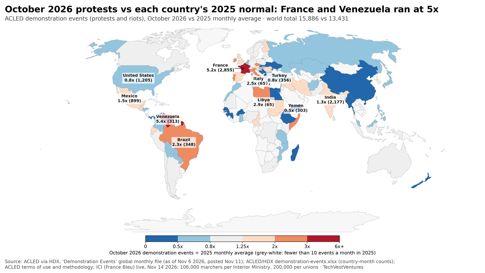
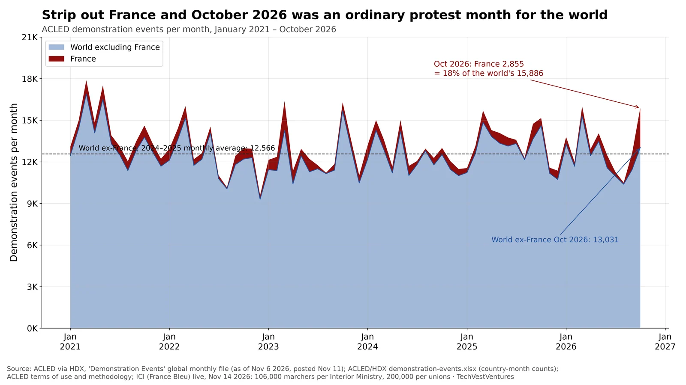

Q10. Protest Surge

World map of ACLED demonstration events (peaceful protests plus riots) in October 2026, the latest complete month, divided by each country's average month in 2025. ACLED counted 15,886 demonstration events worldwide in October 2026, 18% above the 2025 monthly average (13,431) and the busiest month since October 2023 (16,288) in the full-coverage era (243 countries since 2021). The surge was concentrated: France (2,855 events, 5.2x its 2025 norm) and Venezuela (313, 5.4x) led; Italy (2.5x), Brazil (2.3x) and Mexico (1.5x) were also well above normal. The United States was below its 2025 norm (0.77x), partly because October 2025 itself contained the nationwide 'No Kings' day (2,884 US events that month).
- Largest ratios among countries averaging 20+ events a month in 2025: Venezuela 5.4x (313); France 5.2x (2855); Libya 2.9x (65); Portugal 2.5x (76); Italy 2.5x (657); Brazil 2.3x (348); Somalia 2.3x (75); Syria 1.8x (130).
- Lowest ratios among the same group: Slovakia 0.10x; Serbia 0.17x; Nepal 0.19x; Myanmar 0.20x; Panama 0.21x.
- India had the second-most events in absolute terms (2,177), but that is only 1.27x its usual month.
- France's movement continued into November: on Saturday Nov 14 (Act V) the Interior Ministry counted 106,000 marchers nationwide (24,000 in Paris) and the unions 200,000, down from 146,000 (ministry) on Nov 7.
Note: ACLED codes 'demonstration events' as protests and riots; counts are events, not participants, and depend on media and local-partner coverage, which differs across countries. The 2025 baseline is the average of January–December 2025. Countries with fewer than 10 events a month in 2025 are shown in near-white to avoid huge ratios from tiny bases. November 2026 is incomplete in this file (as of Nov 6) and is not used.
Sources: ACLED via HDX, 'Demonstration Events' global monthly file (as of Nov 6 2026, posted Nov 11) ACLED/HDX demonstration-events.xlsx (country-month counts) ACLED terms of use and methodology ICI (France Bleu) live, Nov 14 2026: 106,000 marchers per Interior Ministry, 200,000 per unions

Monthly ACLED demonstration events worldwide, January 2021 to October 2026, split into France (red) and the rest of the world (blue). France recorded 2,855 events in October 2026 — 18% of all demonstration events ACLED logged on the planet that month, against a 4.0% share in 2025. The rest of the world logged 13,031 events, only +4% versus its 2024–2025 monthly average (12,566) and the 24th-busiest of the 70 months shown. The 'global protest wave' visible in world totals this autumn is essentially one country's cost-of-living revolt.
- France by month (ACLED): Aug 2026 115, Sep 1,180, Oct 2,855; its 2025 monthly average was 550.
- World ex-France: Sep 2026 11,430, Oct 2026 13,031. The busiest ex-France month in this window was March 2021 (16,884).
- Unions counted 200,000 marchers on Saturday Nov 14 against the Interior Ministry's 106,000 (ICI live: https://x.com/ici_officiel/status/2121645680120787114).
- Opposing reading on X: the Little Think Tank account notes turnout has fallen every Saturday (ministry counts 550,000 on Oct 17, 410,000 Oct 24, 320,000 Oct 31, 146,000 Nov 7, 106,000 Nov 14) and that media coverage has thinned (https://x.com/L_ThinkTank/status/2121736311442903201). Event counts and crowd sizes are telling different stories.
Note: Event counts measure how many distinct protests or riots ACLED recorded, not crowd size; many small local actions can produce large counts. ACLED coverage became global (243 countries) from 2021, so the chart starts there. October 2026 is the latest complete month in the Nov 6 file.
Sources: ACLED via HDX, 'Demonstration Events' global monthly file (as of Nov 6 2026, posted Nov 11) ACLED/HDX demonstration-events.xlsx (country-month counts) ACLED terms of use and methodology ICI (France Bleu) live, Nov 14 2026: 106,000 marchers per Interior Ministry, 200,000 per unions